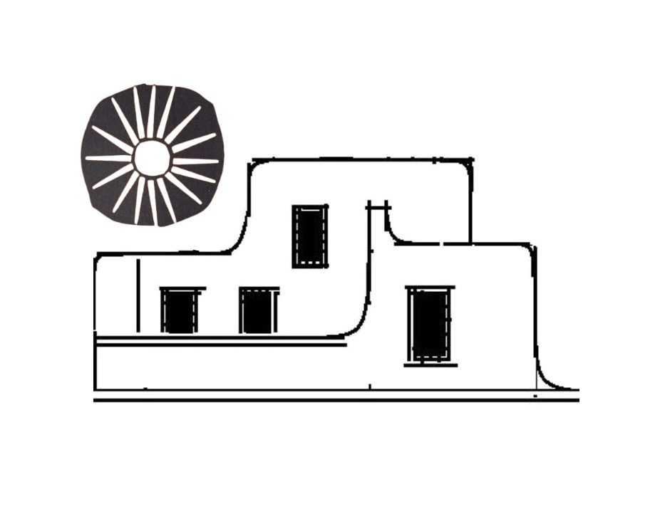

Hi, I'm Jessica! I'm a single mom and I work as an ambulance medic here in Albuquerque. The cost of everything keeps going up, including the rent on my two-bedroom house, but I work hard and always make sure my 6 year-old boy has everything he needs.
I had a realization a few days ago that really upset me. A huge chunk of the pay I get for the hard work I do goes to someone who did absolutely nothing to earn it. My rent is by far the biggest expense I have every month, and I'm the one who did the hard work and put myself in danger to earn that money, not my landlord. I know it's pretty normal to have a landlord, but the more I think about it, the more it seems like something more people should be talking about.
Most months I work fourteen 12-hr shifts. I make $26 per hour, so that's $312 per shift. Since I have to give $1700 to my landlord, that means that for almost 5 and a half days I'm working to make *him* money. 5 and a half days every month I work, but he earns? Something isn't right about that.
Most months my landlord doesn't even do anything. Occasionally he calls a plumber or electrician (if I complain about problems with the house for long enough), but it's not like he's actually doing the work to keep the house up. He's getting my money for doing nothing. A while back I learned that landlords have a term for this: "passive income." That sounds pretty innocuous, like "oh, it just flows into your bank account while you relax." Where did that income flow from? That was me, stabilizing broken bones, treating gunshot wounds, moving dead bodies, and all sorts of terrible circumstances that he never even has to think about. I don't know what he used to do for a living, maybe he was once a hard worker, or maybe he inherited money from a rich uncle. Either way, it's not right that he gets to demand that I work 5 and a half days for him every month. Why aren't more people mad about this?
I know I'm not the only one who experiences this, in fact I'm better off than many of my friends and neighbors. My friend Gabe is a medical assistant, he's a single parent like me and also works very hard, but he only makes $19/hr. That means that fully half of his workdays are spent filling his landlord's pockets! I did the calculation and realized that in the 3 and a half years I've been in my current house I've given my landlord over $70,000! My dad sometimes scolds me for not buying my own house, but I tried and I was never able to afford a down payment. Turns out it's because I was giving it to someone else as their "passive income." I wouldn't be surprised if my landlord took all that cash and used it to fund a down payment on another house he can rent out...
All my friends and neighbors are constantly struggling to make ends meet. When I think about that $70,000 I've just given away, then multiply that by the number of people I know who are in a similar situation to me it's actually a little bit shocking. We're out here clipping coupons for groceries, trying to find side hustles so we can earn a little extra to do nice things for our kids, turning up our thermostats in the summer, but also forking over millions of dollars to a group of people who could send the cops to throw us on the street (or worse) if we can't keep up their stream of "passive income?" How many landlords are there anyway? I'm pretty sure there are a lot more of us than there are of them...
Thinking about this makes me really angry, but I feel helpless to do anything about it. How did we get into this situation, where so many of us spend more time making other people rich than we do meeting our own needs? I don't want to complain about it to my landlord because if I get kicked out of this house then I'll be in an even worse situation. Recently I learned about something called a tenants' union. I knew about labor unions, and I remember that workers used to come together and do really bold things to force their bosses to improve pay and conditions. Maybe us tenants should start thinking the same way. How much better would our lives be if all those hours on the job actually contributed to our own accounts instead our lazy landlords?
How much of your time do you spend working to feed your landlord? Try our calculator and get in touch with people who want to work together to build community power so we can make things better for ourselves and our families.